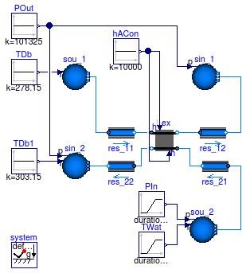
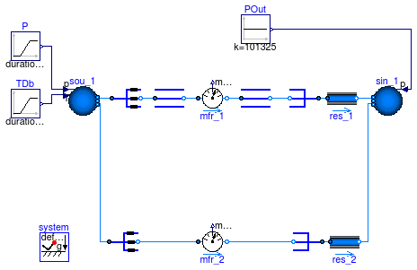
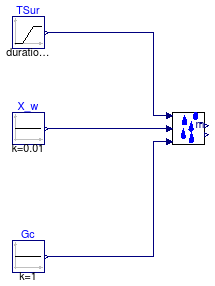

This package contains examples for the use of models that can be found in Buildings.Fluid.HeatExchangers.BaseClasses.
Extends from Modelica.Icons.ExamplesPackage (Icon for packages containing runnable examples).
| Name | Description |
|---|---|
| Model that tests the basic element that is used to built heat exchanger models | |
| Test model for coil manifold | |
| Test model for latent heat exchange | |
| Test model for dummy model that is used to replace the latent heat exchange model in dry coils | |
| Test model for the functions epsilon_ntuZ and ntu_epsilonZ |
 Buildings.Fluid.HeatExchangers.BaseClasses.Examples.HexElement
Buildings.Fluid.HeatExchangers.BaseClasses.Examples.HexElement
model HexElement "Model that tests the basic element that is used to built heat exchanger models" import Buildings; extends Modelica.Icons.Example; package Medium_W = Buildings.Media.ConstantPropertyLiquidWater; package Medium_A = Buildings.Media.PerfectGases.MoistAirUnsaturated;Buildings.Fluid.Sources.Boundary_pT sin_2( redeclare package Medium = Medium_A, use_p_in=true, use_T_in=true, T=288.15, nPorts=1); Modelica.Blocks.Sources.Ramp PIn( height=20, duration=300, startTime=300, offset=101325); Buildings.Fluid.Sources.Boundary_pT sou_2( redeclare package Medium = Medium_A, use_p_in=true, use_T_in=true, T=283.15, nPorts=1); Modelica.Blocks.Sources.Ramp TWat( startTime=1, height=4, duration=300, offset=303.15) "Water temperature"; Modelica.Blocks.Sources.Constant TDb(k=278.15) "Drybulb temperature"; Modelica.Blocks.Sources.Constant POut(k=101325); Buildings.Fluid.Sources.Boundary_pT sin_1( redeclare package Medium = Medium_W, use_p_in=true, T=288.15, nPorts=1); Buildings.Fluid.Sources.Boundary_pT sou_1( redeclare package Medium = Medium_W, use_T_in=true, nPorts=1, p=101340, T=293.15); Fluid.FixedResistances.FixedResistanceDpM res_22( m_flow_nominal=5, dp_nominal=5, redeclare package Medium = Medium_A); Fluid.FixedResistances.FixedResistanceDpM res_12( m_flow_nominal=5, dp_nominal=5, redeclare package Medium = Medium_W); Buildings.Fluid.HeatExchangers.BaseClasses.HexElement hex( redeclare Buildings.Fluid.MixingVolumes.MixingVolumeDryAir vol2, m1_flow_nominal=5, m2_flow_nominal=5, UA_nominal=9999, redeclare package Medium1 = Medium_W, redeclare package Medium2 = Medium_A, dp1_nominal=5, dp2_nominal=5); Modelica.Blocks.Sources.Constant TDb1(k=303.15) "Drybulb temperature"; Fluid.FixedResistances.FixedResistanceDpM res_11( m_flow_nominal=5, dp_nominal=5, redeclare package Medium = Medium_W); Fluid.FixedResistances.FixedResistanceDpM res_21( m_flow_nominal=5, dp_nominal=5, redeclare package Medium = Medium_A); Modelica.Blocks.Sources.Constant hACon(k=10000) "Convective heat transfer"; inner Modelica.Fluid.System system; equationconnect(TDb.y, sou_1.T_in); connect(POut.y, sin_1.p_in); connect(PIn.y, sou_2.p_in); connect(TWat.y, sou_2.T_in); connect(POut.y, sin_2.p_in); connect(hex.port_b1, res_12.port_a); connect(res_22.port_a, hex.port_b2); connect(TDb1.y, sin_2.T_in); connect(res_11.port_b, hex.port_a1); connect(hex.port_a2, res_21.port_b); connect(hACon.y, hex.Gc_1); connect(hACon.y, hex.Gc_2); connect(sou_2.ports[1], res_21.port_a); connect(sin_1.ports[1], res_12.port_b); connect(sou_1.ports[1], res_11.port_a); connect(sin_2.ports[1], res_22.port_b); end HexElement;
Buildings.Fluid.HeatExchangers.BaseClasses.Examples.Manifold
| Type | Name | Default | Description |
|---|---|---|---|
| Integer | nPipPar | 3 | Number of parallel pipes |
| Integer | nPipSeg | 4 | Number of pipe segments |
model Manifold "Test model for coil manifold" package Medium = Buildings.Media.ConstantPropertyLiquidWater; extends Modelica.Icons.Example; parameter Integer nPipPar = 3 "Number of parallel pipes"; parameter Integer nPipSeg = 4 "Number of pipe segments";Modelica.Blocks.Sources.Constant POut(k=101325); Buildings.Fluid.Sources.Boundary_pT sin_1( redeclare package Medium = Medium, use_p_in=true, T=283.15, nPorts=2); Buildings.Fluid.Sources.Boundary_pT sou_1( redeclare package Medium = Medium, use_p_in=true, use_T_in=true, p=101335, T=293.15, nPorts=2); Fluid.FixedResistances.FixedResistanceDpM res_1( m_flow_nominal=5, redeclare package Medium = Medium, dp_nominal=10, use_dh=true, from_dp=false); Buildings.Fluid.Sensors.MassFlowRate[nPipPar] mfr_1(redeclare each package Medium = Medium); Modelica.Blocks.Sources.Ramp TDb( height=1, duration=1, offset=293.15); Modelica.Blocks.Sources.Ramp P( duration=1, height=40, offset=101305); Buildings.Fluid.HeatExchangers.BaseClasses.PipeManifoldFixedResistance pipFixRes_1( redeclare package Medium = Medium, nPipPar=nPipPar, m_flow_nominal=5, dp_nominal=10, linearized=false, mStart_flow_a=5); Buildings.Fluid.HeatExchangers.BaseClasses.PipeManifoldNoResistance pipNoRes_1( redeclare package Medium = Medium, nPipPar=nPipPar, mStart_flow_a=5); Fluid.FixedResistances.FixedResistanceDpM res_2( m_flow_nominal=5, redeclare package Medium = Medium, dp_nominal=10, use_dh=true, from_dp=false); Buildings.Fluid.Sensors.MassFlowRate[nPipPar, nPipSeg] mfr_2(redeclare each package Medium = Medium); Buildings.Fluid.HeatExchangers.BaseClasses.DuctManifoldFixedResistance ducFixRes_2( redeclare package Medium = Medium, nPipPar=nPipPar, nPipSeg=nPipSeg, m_flow_nominal=5, dp_nominal=10, linearized=false, mStart_flow_a=5); Buildings.Fluid.HeatExchangers.BaseClasses.DuctManifoldNoResistance ducNoRes_2( redeclare package Medium = Medium, nPipPar=nPipPar, nPipSeg=nPipSeg, mStart_flow_a=5); Buildings.Fluid.HeatExchangers.BaseClasses.CoilHeader hea1( redeclare package Medium = Medium, nPipPar=nPipPar, mStart_flow_a=5) "Header for water-side heat exchanger register"; Buildings.Fluid.HeatExchangers.BaseClasses.CoilHeader hea2( redeclare package Medium = Medium, nPipPar=nPipPar, mStart_flow_a=5) "Header for water-side heat exchanger register"; inner Modelica.Fluid.System system; equationconnect(POut.y, sin_1.p_in); connect(TDb.y, sou_1.T_in); connect(P.y, sou_1.p_in); connect(res_1.port_a, pipNoRes_1.port_a); connect(res_2.port_a,ducNoRes_2. port_a); connect(pipFixRes_1.port_b, hea1.port_a); connect(hea1.port_b, mfr_1.port_a); connect(mfr_1.port_b, hea2.port_a); connect(hea2.port_b, pipNoRes_1.port_b); connect(ducFixRes_2.port_b, mfr_2.port_a); connect(mfr_2.port_b, ducNoRes_2.port_b); connect(sou_1.ports[1], pipFixRes_1.port_a); connect(sou_1.ports[2], ducFixRes_2.port_a); connect(sin_1.ports[1], res_1.port_b); connect(sin_1.ports[2], res_2.port_b); end Manifold;
Buildings.Fluid.HeatExchangers.BaseClasses.Examples.MassExchange
model MassExchange "Test model for latent heat exchange" extends Modelica.Icons.Example; package Medium = Buildings.Media.PerfectGases.MoistAir;Buildings.Fluid.HeatExchangers.BaseClasses.MassExchange masExc(redeclare package Medium = Medium) "Model for mass exchange"; Modelica.Blocks.Sources.Ramp TSur( duration=1, height=20, offset=273.15 + 5) "Surface temperature"; Modelica.Blocks.Sources.Constant X_w(k=0.01) "Humidity mass fraction in medium"; Modelica.Blocks.Sources.Constant Gc(k=1) "Sensible convective thermal conductance"; equationconnect(TSur.y, masExc.TSur); connect(Gc.y, masExc.Gc); connect(X_w.y, masExc.XInf); end MassExchange;
Buildings.Fluid.HeatExchangers.BaseClasses.Examples.MassExchangeDummy

model MassExchangeDummy "Test model for dummy model that is used to replace the latent heat exchange model in dry coils" import Buildings; extends Modelica.Icons.Example; package Medium = Buildings.Media.PerfectGases.MoistAir;Buildings.Fluid.HeatExchangers.BaseClasses.MassExchangeDummy masExc "Model for mass exchange"; Modelica.Blocks.Sources.Ramp TSur( duration=1, height=20, offset=273.15 + 5) "Surface temperature"; Modelica.Blocks.Sources.Constant X_w(k=0.01) "Humidity mass fraction in medium"; Modelica.Blocks.Sources.Constant Gc(k=1) "Sensible convective thermal conductance"; equationconnect(TSur.y, masExc.TSur); connect(Gc.y, masExc.Gc); connect(X_w.y, masExc.XInf); end MassExchangeDummy;
Buildings.Fluid.HeatExchangers.BaseClasses.Examples.EpsilonNTUZ
Extends from Modelica.Icons.Example (Icon for runnable examples).
model EpsilonNTUZ
"Test model for the functions epsilon_ntuZ and ntu_epsilonZ"
extends Modelica.Icons.Example;
import f = Buildings.Fluid.Types.HeatExchangerFlowRegime;
Real epsilon[5] "Heat exchanger effectiveness";
Real eps[5] "Heat exchanger effectiveness";
Real Z[5] "Ratio of capacity flow rates";
Real ntu[5] "Number of transfer units";
Real diff[5] "Difference in results";
equation
for conf in {f.ParallelFlow,
f.CounterFlow,
f.CrossFlowUnmixed,
f.CrossFlowCMinMixedCMaxUnmixed,
f.CrossFlowCMinUnmixedCMaxMixed} loop
Z[conf] = abs(cos(time));
epsilon[conf] = 0.01 + 0.98*abs(sin(time)) * 1/(1+Z[conf]);
ntu[conf] = ntu_epsilonZ(epsilon[conf], Z[conf], conf);
eps[conf] = epsilon_ntuZ(ntu[conf], Z[conf], conf);
diff[conf] = epsilon[conf] - eps[conf];
assert(abs(diff[conf]) < 1E-10, "Check model implementation for bugs.");
end for;
end EpsilonNTUZ;